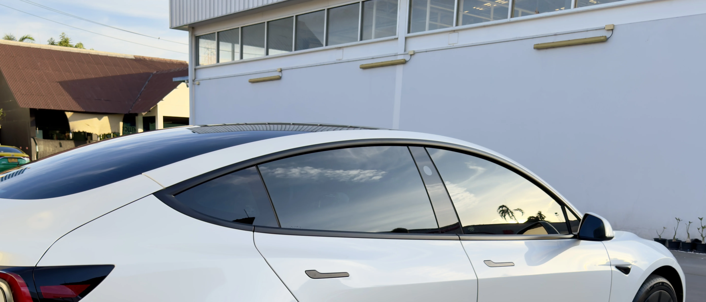

กลางวัน
เด่นเรื่องการลดแสงจ้าและความรู้สึก privacy เหมาะกับผู้ที่ใช้รถกลางวันบ่อยและต้องการฟิล์มโทนเข้มจริง
POSITIONING
ถ้าคุณชอบลุครถที่ดูนิ่ง ต้องการความเป็นส่วนตัวมากขึ้น และต้องการลดแสงจ้าในระดับที่ชัดเจน IR05 คือเฉดที่ตอบโจทย์ที่สุดในซีรีส์นี้
จุดเด่นของ IR05 คือความเข้มที่เห็นผลชัดทั้งจากภายนอกและในประสบการณ์ใช้งานจริง เหมาะกับผู้ที่มีความชัดเจนเรื่องโทนรถ และพร้อมยอมรับความเข้มที่มากขึ้นเพื่อแลกกับ privacy และ glare control

WHY IR05
IR05 เหมาะกับผู้ที่ต้องการให้ภายในรถดู private ขึ้นอย่างชัดเจน และรู้สึกสบายใจกับโทนฟิล์มที่เข้มกว่าปกติ
ด้วยระดับความเข้มที่มากกว่า IR15 และ IR25 จึงช่วยลด glare จากแสงแดดได้เด่นชัด เหมาะกับผู้ที่ขับกลางวันบ่อย
ฟิล์มเฉดเข้มทำให้ภาพรวมรถดูต่างขึ้นทันที เหมาะกับผู้ที่ให้ความสำคัญกับบุคลิกของรถพอ ๆ กับการใช้งาน
WHO IT IS FOR
IR05 เหมาะกับผู้ที่ต้องการฟิล์มเข้มประมาณ 80% ต้องการลุครถที่ชัดเจนขึ้น และต้องการความเป็นส่วนตัวมากกว่าเฉดกลาง
มักเหมาะกับผู้ที่ขับกลางวันเป็นหลัก ชอบรถโทนเข้ม และมีความชัดเจนว่าต้องการฟิล์มที่ “เข้มจริง” มากกว่าการเน้นความโปร่งหรือความสมดุลแบบเฉดกลาง
SPECIFICATION
| รายการ | IR05 |
|---|---|
| Visible Light Transmission (VLT) | 5% |
| Glare Reduction | 93% |
| Total Solar Energy Rejected (TSER) | 66% |
| Infrared Rejection (IRR) | 95% |
| IR Energy Rejection (IRER) | 67% |
| UV Rejection | 99.9% |
| Construction | Metal-free Ceramic Film |
ตัวเลขใช้เพื่อช่วยเปรียบเทียบแนวโน้มของเฉดในซีรีส์เดียวกัน การใช้งานจริงควรดูร่วมกับกระจกรถเดิมและสภาพแสงที่ใช้งานประจำ
REAL-WORLD USE
เด่นเรื่องการลดแสงจ้าและความรู้สึก privacy เหมาะกับผู้ที่ใช้รถกลางวันบ่อยและต้องการฟิล์มโทนเข้มจริง

เป็นเฉดที่ให้ความเป็นส่วนตัวสูงกว่า IR15 และ IR25 เหมาะกับผู้ที่ชัดเจนเรื่องความเข้มและลุครถ

ช่วยให้ภาพรวมรถดูนิ่ง หนักแน่น และมี character ชัดขึ้น โดยเฉพาะกับรถที่เจ้าของต้องการโทนเข้มเป็นพิเศษ
THINGS TO CONSIDER
เพราะนี่คือเฉดที่เข้มที่สุดในกลุ่มที่ร้านเลือกจำหน่าย จึงเหมาะกับผู้ที่ต้องการลุคและความรู้สึกแบบฟิล์มเข้มอย่างชัดเจน
หากคุณขับกลางคืนบ่อยมาก หรือชอบภาพมองออกที่โปร่งสบายกว่า IR15 หรือ IR25 อาจเป็นตัวเลือกที่สมดุลกว่า
รถแต่ละรุ่นมีกระจกเดิมไม่เหมือนกัน การเลือกเฉดจึงควรดูจากรถจริงเพื่อให้ได้ผลลัพธ์ที่เหมาะที่สุด
COMPARE NEARBY SHADES
IR05 เข้มกว่าอย่างชัดเจน และให้ความเป็นส่วนตัวมากกว่า ส่วน IR15 จะใช้งานง่ายกว่าและเป็นจุดสมดุลของซีรีส์
IR05 อยู่คนละบุคลิกกับ IR25 โดยชัดเจน เพราะ IR25 เน้นความโปร่งและมองออกสบายกว่า ในขณะที่ IR05 เน้นความเข้มและ privacy
ถ้าคุณรู้ชัดว่าต้องการฟิล์มโทนเข้ม ไม่ใช่เฉดกลางและไม่ใช่โทนโปร่ง IR05 คือคำตอบที่ตรงที่สุดในกลุ่ม Ceramic Ultra Clear
RELATED PAGES
สำหรับผู้ที่ต้องการจุดสมดุลระหว่างความเข้ม ความสบาย และการใช้งานจริงทุกวัน
สำหรับผู้ที่ต้องการโทนโปร่งขึ้น มองออกง่าย และยังได้ comfort จากฟิล์มเซรามิก
ดูภาพรวมของซีรีส์ Ceramic Ultra Clear และแนวทางเลือกเฉดทั้งหมด
สำหรับผู้ที่ต้องการตัวเลือกคุ้มค่าและเข้าใจง่ายในแนวทางฟิล์มเซรามิก
INSTALLATION QUALITY
ฟิล์มโทนเข้มต้องการความเรียบร้อยของงานติดตั้งมากเป็นพิเศษ เพราะรายละเอียดของขอบฟิล์ม ความสะอาด และงานเก็บจะสังเกตเห็นได้ชัดกว่าเฉดที่โปร่งกว่า
เราจึงให้ความสำคัญกับทั้งการเตรียมกระจก ความสะอาดของพื้นที่ติดตั้ง และการเก็บงานให้เหมาะกับรถแต่ละคัน เพื่อให้เฉดเข้มออกมาสวยและใช้งานได้จริง

CONSULTATION
แจ้งรุ่นรถ ลักษณะการใช้งานกลางวัน/กลางคืน และระดับความเข้มที่คุณต้องการ เราจะช่วยดูว่า IR05 คือเฉดที่เหมาะกับรถคุณ หรือควรขยับไป IR15 หรือ IR25
ปรึกษา / นัดหมายติดตั้ง